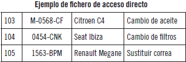

Ficheros de registros - Accesos
Registros y campos
Cuando en un fichero se desea almacenar muchos datos de elementos de una misma categoría (personas, empresas, futbolistas, libros, productos de ferretería, ...) lo habitual es utilizar registros.
Un registro es una estructura de datos que se divide en campos. En cada campo se almacena un dato del mismo tipo.
Los ficheros de registros suelen mostrarse en forma de tabla, donde cada fila es un registro, y las columnas son los campos:
| DNI | nombre | apellidos | fecha-nacimiento | lugar-nacimiento | profesión |
|---|---|---|---|---|---|
| 95655536P | María | Roca Sánchez | 9/9/1999 | Teruel | diseñadora web |
| 8584758R | Luis | Gómez Gómez | 24/6/2008 | Madrid | estudiante |
| 8584759F | María | Gómez Gómez | 24/6/2008 | Madrid | estudiante |
| 33359854T | Alberto | Pi Maragall | 13/3/1950 | Toledo | jubilado |
En estos ficheros:
- las filas son registros
- las columnas son campos
Este tipo de estructuras son las utilizados en las Bases de Datos, donde se denominan tablas.
campo clave
Si entre los campos hay uno que nos permite determinar sin ambigüedad la fila a la que pertenece, a ese campo se lo denomina campo clave (key).
campo clave: Una clave es un campo que no se repite en ninguno de los registros, y suele utilizarse para realizar las búsquedas. Si el fichero se encuentra ordenado por el campo clave, se agilizarán las búsquedas.
En los ficheros de registros siempre debería existir una clave, que puede estar formada por más de un campo.
Clasificación de los ficheros de registros según el tipo de acceso
Para que una aplicación pueda utilizar un fichero debe realizar un proceso de apertura del mismo.
Abrir un fichero básicamente es, cargarlo en memoria y crear las estructuras que necesite la aplicación para manipularlo.
En función de cómo son accedidos los registros del fichero, se habla de ...
1. Acceso Secuencial
Los datos se almacenan uno a continuación de otro, debiendo recorrer toda la información anterior al dato que queremos leer.
95655536P#María#Roca Sánchez#9/9/1999#Teruel#diseñadora web$8584758R#Luis#Gómez Gómez#24/6/2010#Madrid#estudiante$8584759F#María#Gómez Gómez#24/6/2008#Madrid#estudiante$33359854T#Alberto#Pi Maragall#13/3/1950#Madrid#jubilado%
En el ejemplo anterior # delimita campos, y $ delimita registros.
En los ficheros secuenciales suele haber una marca indicativa del fin del fichero, que suele denominarse EOF (End of File), en este ejemplo es %.
Inconvieniente de los ficheros secuenciales: Para acceder a determinado registro, debo pasar por encima de todos los registros anteriores.
En un fichero secuencial, para conocer la profesión del individuo con DNI 8584758R debo buscarlo entre todos los datos anteriores.
Este tipo de ficheros era propio de los sistemas de almacenamiento secuenciales (cintas).
Ejercicio
Convierte el fichero de provincias en un fichero con formato de acceso secuencial,
utilizando los mismos separadores del ejemplo anterior.
2. Acceso Directo
Los registros se almacenan en la posición determinada por el camplo clave, de manera que la clave debe ser numérica y comprendida dentro del rango de valores de las direcciones.

El acceso a los registros en los ficheros de acceso directo es rapidísmo, pues al emplearse claves numéricas, éstas almacenan la posición física que ocupa el registro dentro del fichero.
Directo por hash
En este caso la posición de los registros se calcula mediante algún tipo de fórmula generada con el campo de búsqueda.
El campo de búsqueda suele ser el campo clave.
Por ejemplo, si el campo de búsqueda es el DNI, podrían tomarse los 3 primeros números para situar ese registro concreto en esa posición del fichero. Tiene el inconveniente de que pueden quedar muchos huecos vacíos dentro del fichero.
- Colisión de registros
Si intentamos insertar un DNI cuyos 3 primeros dígitos coinciden con otro ya introducido, al estar esa posición ocupada, se produce una "colisión" de registros, y el nuevo registro se guardará al final del fichero, en una zona llamada "de desbordamiento". En el área de desbordamiento, la búsqueda es secuencial.
3. Acceso Indexado
En este caso se tienen dos ficheros: el de los registros y el fichero índice.
El fichero índice almacena dos campos:
- el campo que vamos a utilizar en las búsquedas, y
- la posición de ese registro.
fichero índice: fichero de registros:
| nombre | índex |
|---|---|
| Alberto | 4 |
| Luis | 2 |
| María | 1 |
| María | 3 |
| DNI | nombre | apellidos | fecha-nacimiento | lugar-nacimiento | profesión |
|---|---|---|---|---|---|
| 95655536P | María | Roca Sánchez | 9/9/1999 | Teruel | diseñadora web |
| 8584758R | Luis | Gómez Gómez | 24/6/2008 | Madrid | estudiante |
| 8584759F | María | Gómez Gómez | 24/6/2008 | Madrid | estudiante |
| 33359854T | Alberto | Pi Maragall | 13/3/1950 | Toledo | jubilado |
Dos cosas:
- El campo "index" se implementa con punteros o referencias, que no es otra cosa que direcciones de memoria.
- El fichero de índice debe estar siempre ordenado por el campo de búsqueda para poder aprovecharnos de la
eficacia de los algoritmos de búsqueda como el de búsqueda binaria.
Está es la forma de almacenamiento de las tablas en las BBDD:
- las claves generan índices automáticamente,
- además podremos declarar otros campos como índice para realizar búsquedas más rápidas.